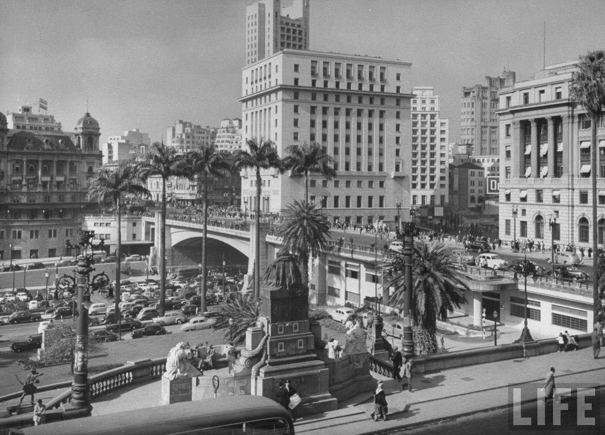
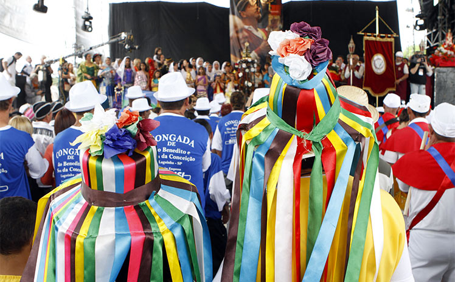
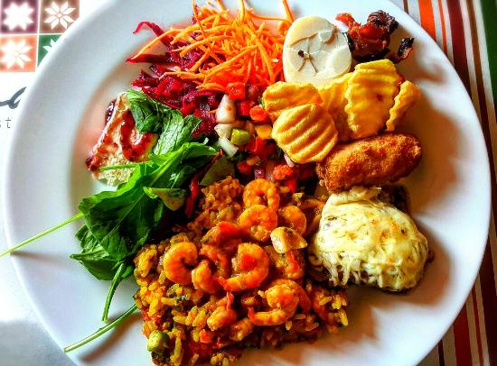
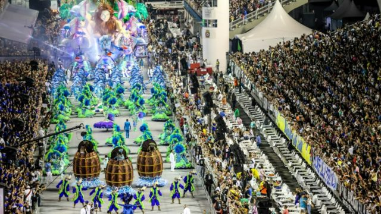

História
São Paulo é uma cidade brasileira, capital do estado homônimo e principal centro financeiro, corporativo e mercantil da América Latina. Fundada em 25 de janeiro de 1554 pelos padres jesuítas Manuel da Nóbrega e José de Anchieta, São Paulo surgiu como um povoado de catequização de índios, em um colégio fundado pelos jesuítas. Desde então, a cidade cresceu e se desenvolveu, tornando-se um importante centro urbano, cultural e econômico.
Cultura
São Paulo é uma cidade cosmopolita, que abriga uma diversidade de culturas e tradições. A cidade é conhecida por sua cena cultural vibrante, com teatros, museus, galerias de arte e centros culturais. Alguns dos principais pontos culturais de São Paulo incluem o Theatro Municipal, a Pinacoteca do Estado, o MASP - Museu de Arte de São Paulo, o Centro Cultural Banco do Brasil e a Biblioteca Mário de Andrade.
Turismo
São Paulo é uma cidade cheia de atrações turísticas, que agradam a todos os tipos de viajantes. Alguns dos principais pontos turísticos de São Paulo incluem a Avenida Paulista, que é um importante centro financeiro e cultural da cidade, o Parque Ibirapuera, que é um dos maiores parques urbanos do mundo, e o Mercado Municipal, que é conhecido por seus alimentos frescos e seus sanduíches de mortadela. Outros pontos turísticos populares incluem a Catedral da Sé, o Mosteiro de São Bento, o Jardim Botânico e o Estádio do Morumbi.

Gastronomia
A gastronomia de São Paulo é um verdadeiro tesouro para os amantes da culinária. A cidade possui uma grande diversidade de restaurantes, bares e lanchonetes, que oferecem desde a tradicional comida brasileira até pratos internacionais. Alguns dos pratos mais famosos de São Paulo incluem o sanduíche de mortadela do Mercado Municipal, a pizza paulistana, o pastel de feira e o famoso churrasco gaúcho.
Eventos
São Paulo é uma cidade repleta de eventos durante todo o ano. Desde festivais de música e teatro até eventos esportivos e feiras de negócios, há sempre algo acontecendo na cidade. Alguns dos principais eventos de São Paulo incluem a Virada Cultural, o Carnaval de São Paulo, a São Paulo Fashion Week e a Bienal de Arte de São Paulo.
